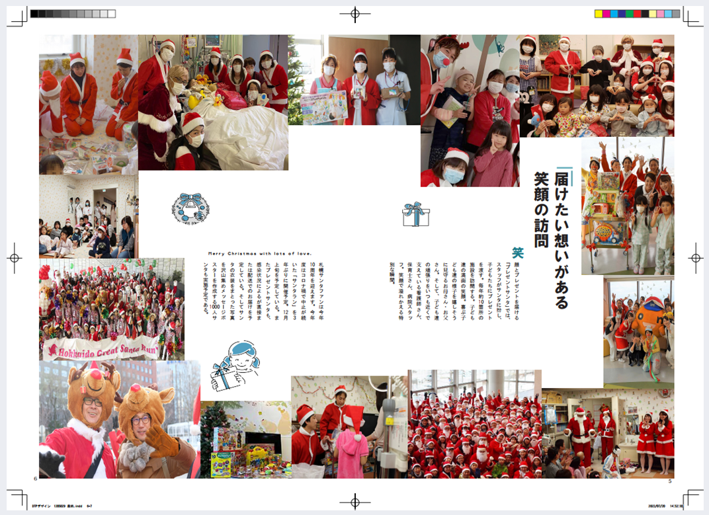

授業課題
ICHIBASHI
制作：2021年1月
制作期間：3週間
tool：jimdo/XD/html/css
「webデザインⅡ」の最終課題で制作したオリジナル飲食店サイトです。jimdoを利用し制作しましたが、私が初めてHTML/CSSを使用した作品です。
テーマはラーメンとカフェの融合です。カフェのような店内の設定であるため、サイトを見ただけで雰囲気を汲み取れるようなシンプルなデザインにしました。
「素材そのもの」を大切にしている設定であるため自然を感じる「緑」を散りばめました。
※topとstyleのみの制作
サッポロサンタファン
制作：2022年7月
制作期間：1ヶ月
tool：Photoshop/Indesign
「DTP」デザインの授業で制作した雑誌デザインです。Photoshopで画像を調整し、Indesignで制作しました。
チャリティイベントである「サッポロサンタファン」を題材にし、運営委員会にインタビューを行いながら制作を進めました。学生の参加率をあげる為にターゲットを「学生」とし、笑顔が溢れた活動の様子が分かるように写真を多く使用しました。
また、冬のイベントであるため全体的に青で構成しました。
- 
Druidas
制作：2022年6月
制作期間：2週間
tool：canva
「プロジェクト演習Ⅱ」の講義で制作した広告動画です。
6人グループで、廃棄物の問題を解決するために「規格外食物の再利用石鹸」というビジネスモデルを考え、私は広告を担当しました。動画では1分以内で魅力を伝えられるように分かりやすく見やすいデザインを意識しました。
また、「儚いピンク」をイメージカラーとしていたためイメージを定着させる為に全体的にピンクで構成しました。
Run Run Food
制作：2022年6月
制作期間：1ヶ月半
tool：scratch
「ゲーム制作Ⅱ」の講義で制作したゲームです。3人でグループを組み、私はプログラミングを担当しました。
scratchで制作したため、言語は必要ありませんでしたが、イメージ通りに動かすために試行錯誤を繰り返し完成させた作品です。
ジャンプやスライディングによってキャラクターの動きが変化するところが見所です。